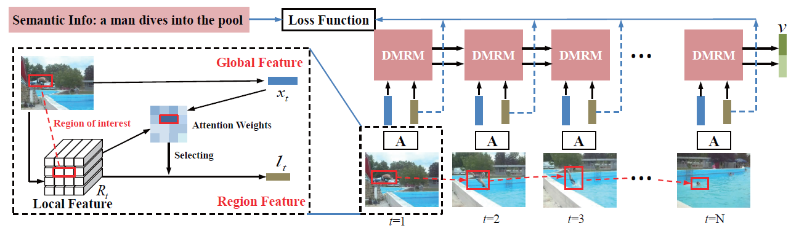

As a crucial challenge for video understanding, exploiting the
spatial-temporal structure of video has attracted much attention
recently, especially on video captioning. Inspired by the insight
that people always focus on certain interested regions of video
content, we propose a novel approach which will automatically
focus on regions-of-interest and catch their temporal structures. In
our approach, we utilize a specific attention model to adaptively select
regions-of-interest for each video frame. Then a Dual Memory
Recurrent Model (DMRM) is introduced to incorporate temporal
structure of global features and regions-of-interest features in parallel,
which will obtain rough understanding of video content and
particular information of regions-of-interest. Since the attention
model could not always catch the right interests, we additionally
adopt semantic supervision to attend to interested regions more
reasonably. We evaluate our method for video captioning on two
public benchmarks: Microsoft Video Description Corpus (MSVD)
and Montreal Video Annotation (M-VAD). The experiments demonstrate
that catching temporal regions-of-interest information really
enhances the representation of input videos and our approach obtains
the state-of-the-art results on popular evaluation metrics like
BLEU-4, CIDEr, and METEOR.
Overview

An overview of the proposed approach.
Code
The code will be released soon.
Our experiments are implemented using the Torch Framework.
Datasets
The datasets used in the paper are available at the following links:
Microsoft Video Description Corpus (MSVD or Youtube2text):
Raw Data
Page - http://www.cs.utexas.edu/users/ml/clamp/videoDescription/
[Raw Corpus]
[Processed Data]
Attention:The processed data is not ours. We just use the processed corpus from this page.
Montreal Video Annotation Description (M-VAD) Dataset:
http://www.mila.umontreal.ca/Home/public-datasets/montreal-video-annotation-dataset
Reference
If you find this useful in your work, please consider citing the following reference:
@inproceedings{dmrmyangMM17,
title = {Catching the Temporal Regions-of-Interest for Video Captioning},
author = {Ziwei, Yang and Yahong, Han and Zheng, Wang},
booktitle = {Proceedings of the ACM International Conference on Multimedia (ACM MM)},
year = {2017}
}